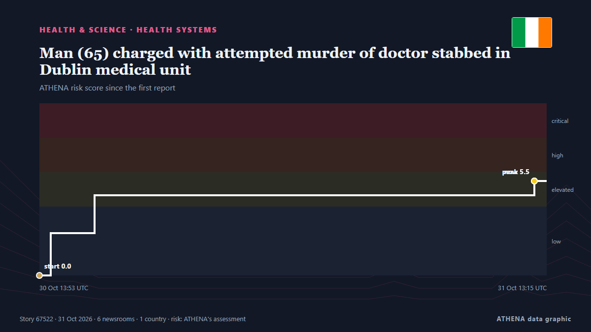

Gesundheitssysteme
| 18. Okt. | 0 |
|---|---|
| 19. Okt. | 0 |
| 20. Okt. | 0 |
| 21. Okt. | 0 |
| 22. Okt. | 0 |
| 23. Okt. | 3 |
| 24. Okt. | 1 |
| 25. Okt. | 1 |
| 26. Okt. | 1 |
| 27. Okt. | 2 |
| 28. Okt. | 4 |
| 29. Okt. | 6 |
| 30. Okt. | 4 |
| 31. Okt. | 2 |
Schlagzeilen werden auf Englisch angezeigt, wie veröffentlicht.

Man (65) charged with attempted murder of doctor stabbed in Dublin medical unit
He appeared before Judge Michele Finan at Dublin District Court on Saturday morning. von Irish Independent
Health insurance plan costs on Healthcare.gov to rise by double digits in 2027
Obamacare enrollees could see their health insurance premiums rise by double digits for a second year in a row, according to a report published Friday. von The Hill
Tumbler Ridge victim Maya Gebala’s father says she’s leaving hospital after 262 days
The father of Tumbler Ridge attack victim Maya Gebala says she is being released from BC Children's Hospital, more than eight months after being shot three times. von The Canadian Press (via CityNews)
Ahead of midterms, Missourians defend transgender healthcare
The campaign to defend access to transgender healthcare for young people in Missouri is taking an unhurried approach to talking with voters about the proposed ban. von NPR
More than 70 Scottish doctors back NHS report warning over school iPad use
The report warned over the allocation of school iPads to seven year olds. von The Scotsman
Oxygen Cylinder Explodes Inside Ambulance, Killing at Least 10 in Pakistan
Officials say an oxygen cylinder exploded inside a parked ambulance at a government-run medical facility in southern Pakistan, killing at least 10 people, including a patient of the facility. von ABC News (International)
Simon Harris rejects ‘characterisation’ of phone call with Patrick O’Donovan
Mr Harris said he has “been clear” that the characterisation of the call “isn’t reflective of the reality” von Irish Mirror
Queensland drive-by shooting update
A victim of the Logan pub drive-by shooting remains in critical condition but in good spirits, his family says. von Sydney Morning Herald
Stroke survivor saved after speaking 'gibberish' on call
A man is urging people to be aware of the stroke symptoms after he was saved by a colleague who noticed he was speaking "complete gibberish" on a work call. von RTÉ News
Kyrgyzstan performs 116 kidney transplants and 11 liver transplants
Kyrgyzstan has performed 116 kidney transplants and 11 liver transplants, Deputy Health Minister Nurbek Bukuev said on October 26 at a meeting of the Zhogorku… von 24.kg (English)
STRIDES to strengthen Fiji’s diagnostic capacity
Permanent Secretary for Health Dr Aalisha Sahukhan says strengthening Fiji’s laboratory network is critical to improving the country’s ability to detect and respond to infectious diseases. von FBC News
Acting President Mohadi urges graduates to embrace entrepreneurship
Remember Deketeke GOVERNMENT has urged graduates to embrace entrepreneurship, innovation and technology to create employment and contribute to Zimbabwe’s economic development. von The Herald
Prudential convenes inaugural Partnership Summit to shape the next era of customer and business growth
Media OutReach Newswire – 28 October 2026 – Prudential plc (“Prudential”), a leading insurer and asset manager in Asia and Africa, brought together senior leaders from key banking and strategic… von Laotian Times
AOX recognised as APAC’s Top Collagen-Renewing Water Dispensers in 2026 by Healthcare Business Review
Singapore-founded company marks 17 years of growth as it builds a new category around everyday hydration and wellness SINGAPORE – Media OutReach Newswire – 29 October 2026 – Singapore-founded water… von Laotian Times
Nasarawa Assembly decries resurgence of kidnappings
"Security agencies and the state government should rise up to curtail the rate of kidnapping and other forms of insecurity in my constituency," he appealed. von Vanguard
Kenya: Specialised Rescue Team Deployed to Eastleigh Building Collapse
[Capital FM] Nairobi -- The Kenya Defence Forces (KDF) has deployed specialised rescue teams, canine units and equipment to support ongoing efforts to locate survivors following the collapse of a… von AllAfrica
Beekse Bergen zookeeper dies after leopard attack
A zookeeper at Beekse Bergen safari park has succumbed to her injuries after being attacked by a leopard in one... von DutchNews.nl